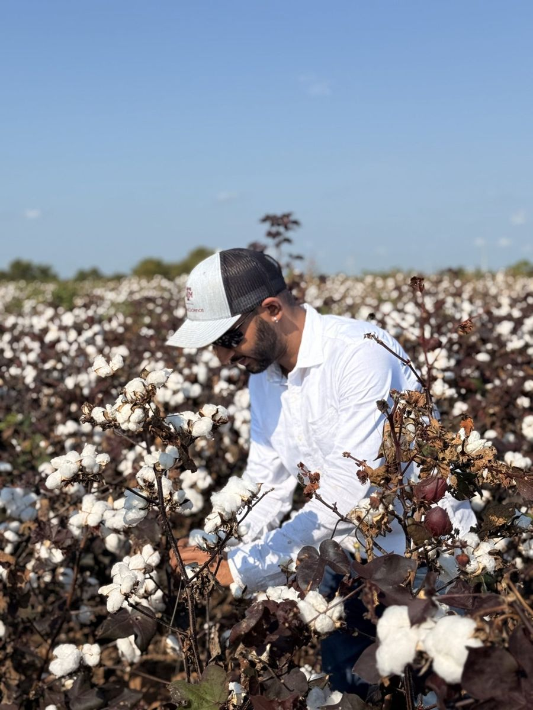
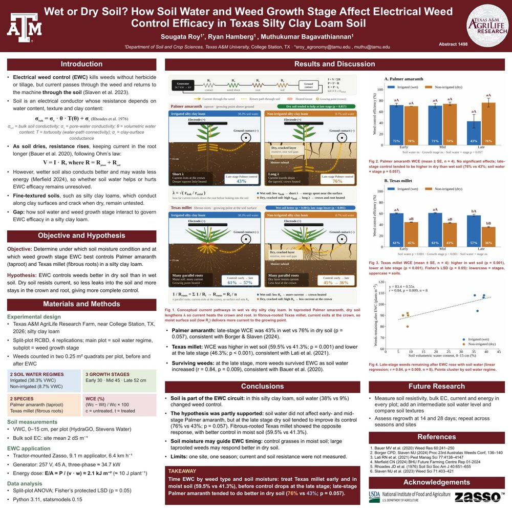

Ongoing Projects
What I am working on now in the Bagavathiannan Weed Science Lab at Texas A&M: weed control without herbicides, using electricity, flame, cultivation and roller-crimping in Texas fields. Each project shows the question, what we did, what we found so far and what comes next.
Non-chemical termination of cover crops
Does electrocution improve roller-crimper cover crop termination?
Why it matters
Organic growers can’t use herbicides to kill cover crops, and the roller crimper alone often leaves survivors that regrow and compete with the cash crop.
What we did
In 2026 we compared five same-day treatments on cereal rye at soft dough: untreated control, electrocution (EWC) alone, roller crimper (RC) alone, RC→EWC and EWC→RC.
What we found
Next
A second season, to be completed by May 2027, adds a glyphosate (Roundup) chemical check and runs with 3 replications.
Team: Sougata Roy, Ryan Hamberg and Muthukumar Bagavathiannan, Texas A&M University
Integrated non-chemical weed management in organic grain sorghum
Can electricity, flame and cultivation, combined, control weeds both between and within sorghum rows without herbicides?
Why it matters
Weeds grow in two zones. Between the rows is the easy part; within the row, right next to the crop, there is no herbicide and hand-weeding is the costly fallback. No single tool controls both zones.
What we did
In 2026 we tested eight programs that pair an inter-row tool (EWC, flaming or cultivation) with intra-row flaming, in an RCBD with 4 replications, scoring weed control by zone and crop injury up to 28 days after treatment.
What we found
Flaming nearly eliminated broadleaves such as waterhemp and Palmer amaranth, while grasses like barnyardgrass regrew.
Next
Test for any yield penalty, track canopy recovery with hyperspectral data, and repeat the study in the cotton–sorghum system.
Team: Sougata Roy, Ryan Hamberg and Muthukumar Bagavathiannan, Texas A&M University
Electricity, flame and tillage in Texas cotton
Can non-chemical tactics replace herbicides in Texas cotton?
What we are doing
The same toolkit as in sorghum, electricity, flame and tillage, applied to Texas cotton to see whether non-chemical programs can match herbicide-based weed control.
Status
- 2026 field applications completed in August.
- Won 1st prize for the oral presentation at the Texas A&M Tri-Societies Meeting Preparation Symposium (Oct 2026).
- Poster accepted for the WSSA 2027 Annual Meeting, Denver.
Team: Sougata Roy, Ryan Hamberg and Muthukumar Bagavathiannan, Texas A&M University

Soil moisture, weed growth stage and electrical weed control
Wet or dry soil? How do soil water and weed growth stage change how well EWC works?
Why it matters
In electrical weeding the current flows through the weed and returns through the soil, so the soil is part of the circuit. Whether wet or dry soil gives better control has not been settled, and fine-textured silty clay loams had not been tested.
What we did
A split-plot trial in 2026: irrigated (38% water content) versus non-irrigated (9%) soil, with weeds treated at early, mid and late growth stages.
What we found
Grasses with fibrous roots responded better in moist soil, while large taprooted weeds tended to do better in dry soil, so soil moisture may help guide when to run EWC.
Next
Measure soil resistance and energy in every plot, add an intermediate moisture level, compare soil textures and repeat across seasons and sites. Being presented at TPPA (Dec 2026) and SWSS (Jan 2027).
Team: Sougata Roy, Ryan Hamberg and Muthukumar Bagavathiannan, Texas A&M University

Conductive liquid pre-sprays for electrical weed control
Can a conductive liquid sprayed before an EWC pass make electrical weed control more effective?
What we are doing
Testing whether wetting weeds with a conductive liquid just before an electrical pass helps more current reach the plant and improves control.
Status
- A second run of the trial is planned to confirm the first results.
- Accepted as a Single Slide Talk in the student contest at the WSSA 2027 Annual Meeting, Denver.
Team: Sougata Roy, Ryan Hamberg and Muthukumar Bagavathiannan, Texas A&M University
Weed seed viability after electrical weed control
Does electrical weed control reduce the viability of seeds that weeds have already set?
What we are doing
Testing whether seeds of Palmer amaranth and Texas millet stay viable after the parent plants are treated with electricity, which matters for how fast the weed seedbank builds up.
Status
- Presented as a poster at the Global Sorghum Conference / SICNA, Lubbock (Sep 2026).
Team: Sougata Roy, Ryan Hamberg and Muthukumar Bagavathiannan, Texas A&M University